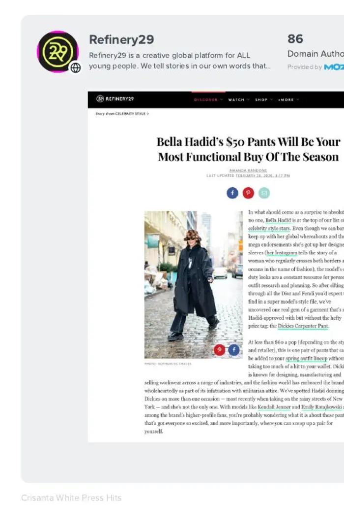
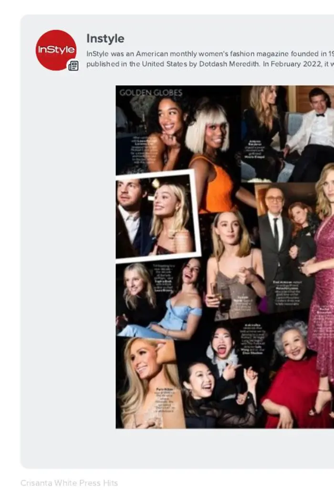
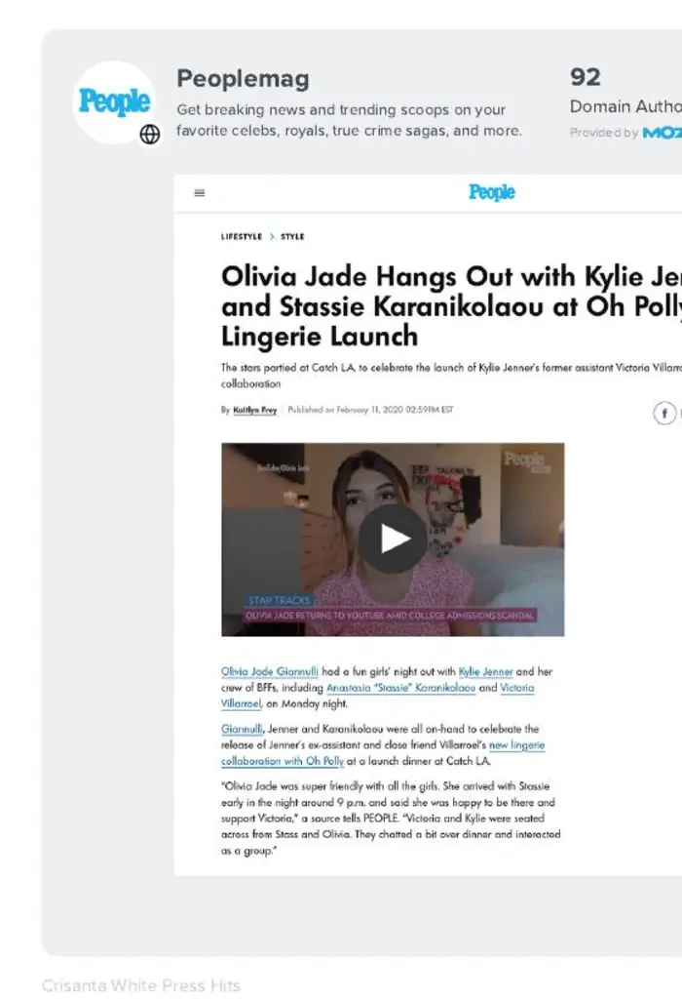
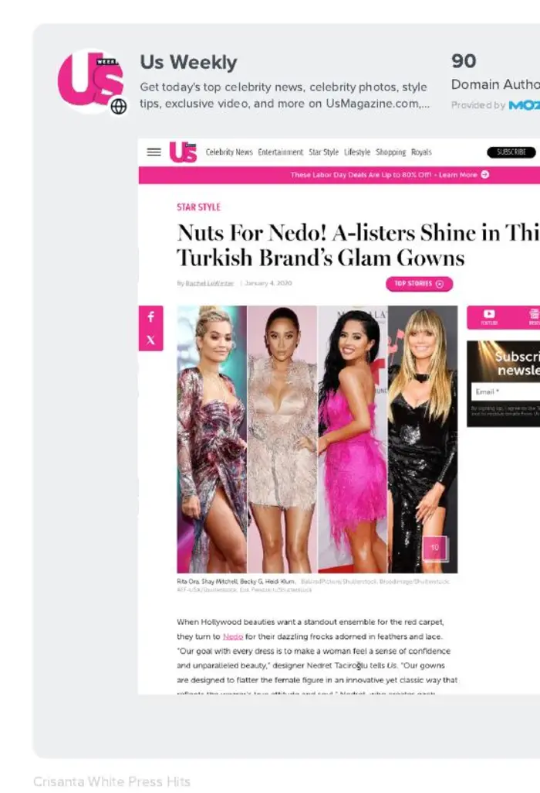
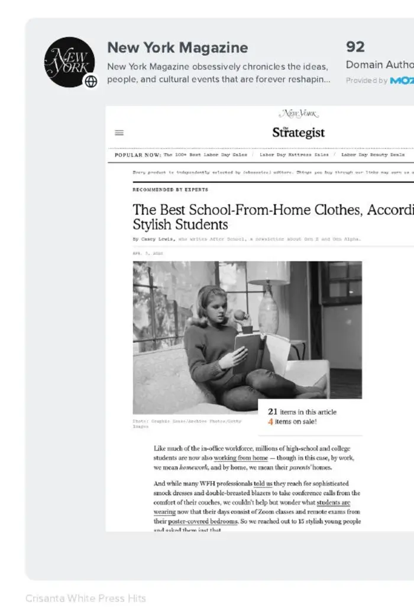
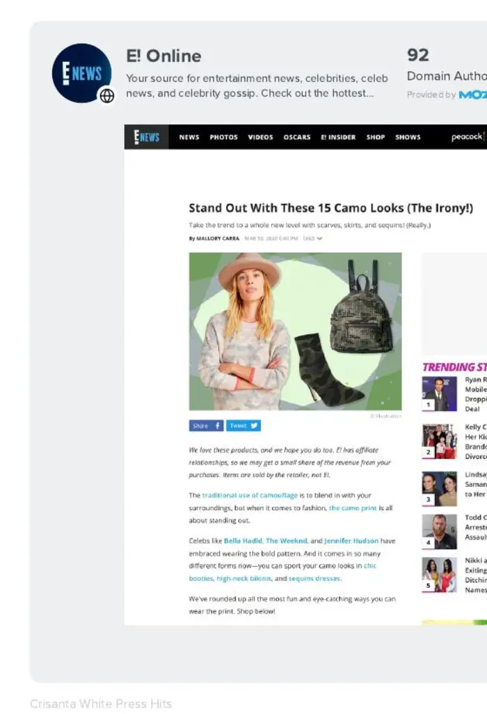
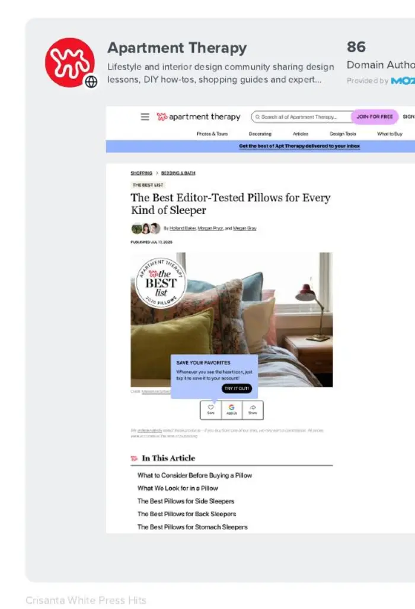
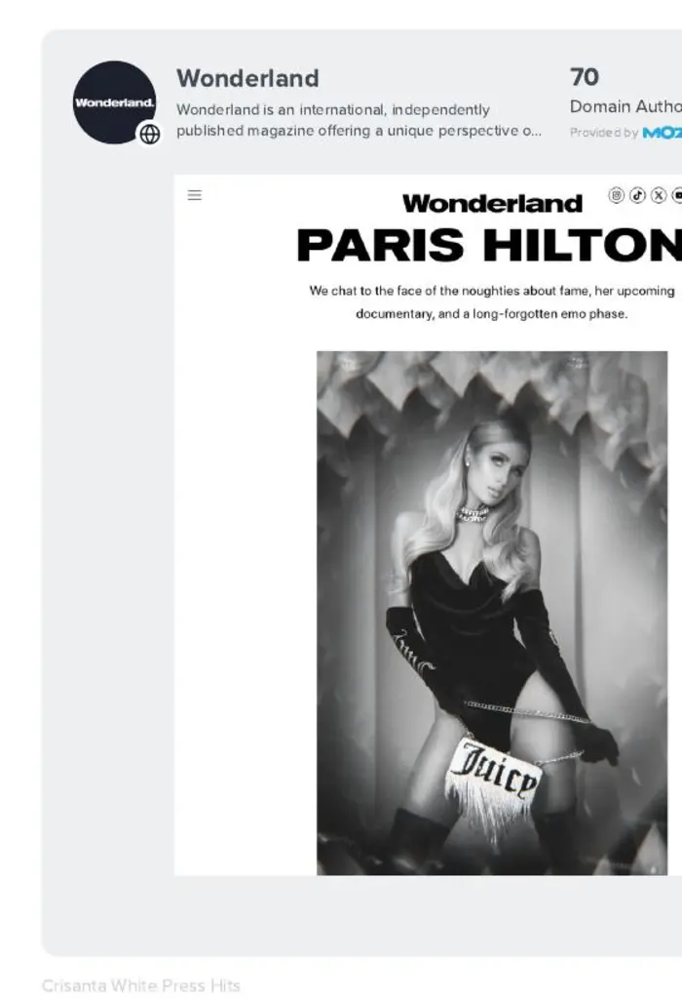

Senior strategy, hands-on execution
10+ years
Shaping stories, building visibility & creating moments that earn attention
Boutique PR for beauty, fashion, wellness & lifestyle
CMarie PR helps beauty, fashion, wellness & lifestyle brands earn attention, shape the conversation & show up where it matters through media, influence & memorable brand moments.
No copy-and-paste PR plans
We bring together the stories, relationships & moments that can make the biggest difference for your brand now.
Start with the priority
Whether it’s a new brand, collection, product or campaign, we find the story, shape the rollout & introduce it to the people most likely to care.
The right story can move a brand from seen to remembered. We shape the narrative, find the timely angle & put it in front of the media that matter.
Not every creator is the right creator. We build partnerships around real fit, strong storytelling & what the brand is actually trying to achieve.
A good event should make an impression in the room & keep working after the doors close. Support can scale from communications strategy to full production through a custom scope.
Selected career coverage
A selection of coverage secured across CMarie PR engagements, prior agency roles & consulting partnerships.















Purpose-driven partnerships
Alongside consumer brands, CMarie selectively partners with cultural & mission-driven organizations whose work deserves greater visibility and deeper community connection.
Debbie Allen Dance Academy ✦ Brass Tacks
About CMarie
Founder & Managing Director

Crisanta White is a senior communications strategist with more than a decade of experience shaping how beauty, fashion, wellness, lifestyle, consumer & cultural brands show up in the world.
Across agency leadership, consulting partnerships & CMarie PR engagements, she has led ongoing press programs, brand & collection launches, editorial pitching, media & influencer seeding, celebrity & stylist outreach, creator initiatives & more than 40 experiential activations. Her career work has earned attention from outlets including Vogue, WWD, Forbes, GQ, NewBeauty, mindbodygreen, Travel + Leisure & The Hollywood Reporter.
Her approach blends editorial instinct, cultural awareness & the practical judgment to know what makes a story timely, a brand relevant & a moment worth talking about.
Crisanta founded CMarie PR to give brands direct access to the kind of senior thinking, honest counsel & hands-on follow-through that can get separated from day-to-day execution at larger agencies.
Every client works directly with Crisanta from kickoff through execution. She stays close to the strategy, relationships & day-to-day details, with each engagement shaped around what the brand actually needs.
Founder experience includes work with CAULIPOWER · Dickies Girl · Four Sigmatic · Grant Stone · House of CB · Michael Cinco · MONSOORI · Nedo · NUDA · Oh Polly · SpaRitual · The Organic Skin Co. · Vegan Fashion Week · Walmart
Founder experience reflects work completed across prior agency roles, agency consulting partnerships & CMarie PR engagements.
Work with CMarie
Let’s build a focused PR plan around where your brand is now & where it wants to go next.
Book a discovery call Los Angeles, CA